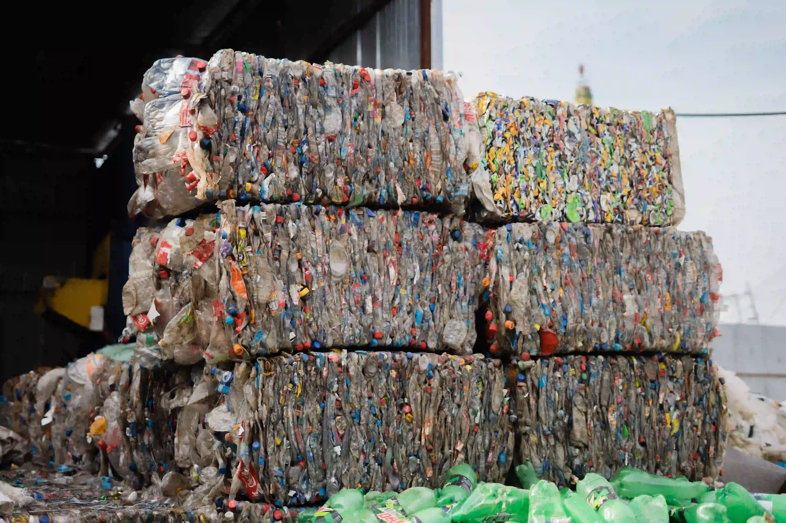
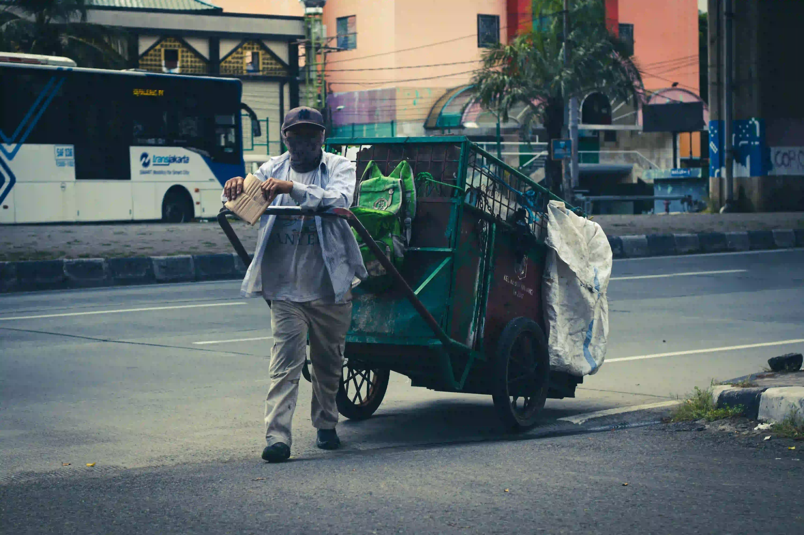
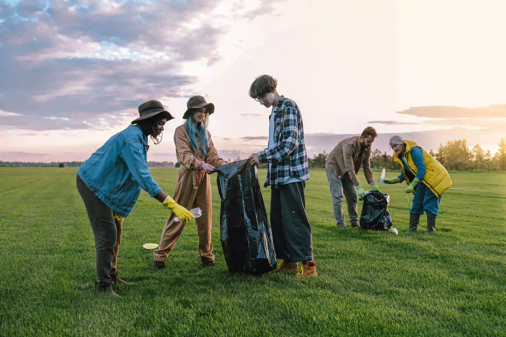

Kenapa Sampah yang Sudah Dipilah Bisa Tercampur Lagi?
Pemilahan di rumah adalah awal. Pengangkutan, kontaminasi, dan keterbatasan fasilitas ikut menentukan perjalanan sampah berikutnya.
Baca selengkapnya →

Tidak harus mengubah semuanya sekaligus. Kenali satu sampah, pilih langkah yang tepat, lalu jadikan kebiasaan kecil itu bagian dari harimu.